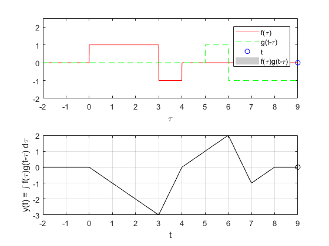

RPL04: Convolución y correlación
Fernandez Santana Viviana Elizabeth
García Morales Pablo
Grupo: 2MV1
Contents
Objetivos
- Conocer métodos básicos de integración numérica
- Manipulación de instrucciones en MATLAB
- Simular convoluciones y correlaciones de señales continuas
- Simular convoluciones y correlaciones de señales discretas
Introducción
Matlab es una herramienta que nos puede servir de apoyo para la simulación de operaciones como la convolución, correlación y autocorrelación de dos señales. Pero, cómo se definen estas operaciones?
Empecemos con la convolución, existen dos tipos de convoluciones, para señales en tiempo continuo y para señales en tiempo discreto. Bien sabemos la forma de encontrar la convolución de dos señales en tiempo continuo:
Sea: y 
Su convolución es:
Para establecer límites de integración es necesario analizar las funciones, en caso de que se traten de escalones unitarios, la sustitución de y establecen límites de integración finitos para poder resolver las integrales en el intervalo de tiempo correcto.
Ahora, en cuanto a convolución en tiempo discreto, tenemos:
Sea: y
Su convolución es:
Para el caso de la correlación de igual forma se separan por señales de tiempo contunuo y tiempo discreto y existen tres métodos, veamos los tres casos para tiempo continuo:
Método 1:
Método 2:
Método 3(usando convolución):

Para el caso del tiempo discreto tenemos:
Método 1:
Método 2:
Método 3(usando convolución):
PR04
Ejemplo PR04:
figure; subplot(1,3,1); syms t; f=piecewise(t<0,0,0<t<1,exp(-t),1<t,0); fplot(f,[-0.25,1.25],'r'); grid on; title('f(t)'); subplot(1,3,2); g=piecewise(t<-1,0,-1<t<1,t,1<t,0); fplot(g,[-2,2],'r'); grid on; title('g(t)'); t1=-1:0.01:0; t2=0:0.01:1; t3=1:0.01:2; subplot(1,3,3); plot(t1,t1-1+2*(exp(-t1-1))); hold on; plot(t2,t2-1+((1/exp(1))*(2-t2))); plot(t3,(1/exp(1))*(2-t3)); grid on; title('f(t)*g(t)'); axis([-1 2 -0.4 0.4]);
Otra forma de hacer lo es con funciones y para la comparación de graficas. El siguiente código es una modificación del código de Lathi (Código del capítulo 2, M2.4 pág 161), ejemplo de convoluciones continuas
function convconm(x,h) figure (1) % Se crea una figura para hacer las gráficas dtau = 0.005; % Base de los rectangulos para realizar la integral tau = -2:dtau:9; % Intervalo de visualización del resultado ti = 0; % Indice para el vector de resultados tvec = -2:.1:9; % traslaciones de t, cuantas integrales se calulan y = NaN*zeros(1, length (tvec)); % Resultados de acuerdo a cuantos t for t = tvec, % Cantidad de traslaciones ti = ti+1; % Indice para guardar el resultado (indice del tiempo) xh = x(t-tau).*h(tau); % resultado de la multiplicación lxh = length(xh); % longitud del resultado y(ti) = sum(xh.*dtau); % Base por altura, aproximación de la integral subplot (2,1,1), % gráfica de 2 x 1 (primera) plot(tau, h(tau), 'r-', tau, x(t-tau), 'g--', t, 0, 'ob'); %graficas axis ([tau(1) tau(end) -2.0 2.5]); % límites de los ejes patch([tau(1:end-1); tau(1:end-1); tau(2:end); tau(2:end)],... [zeros(1,lxh-1);xh(1:end-1);xh(2:end);zeros(1,lxh-1)],... [.8 .8 .8], 'edgecolor', 'none'); xlabel('\tau'); % Texto del eje X legend('f(\tau)', 'g(t-\tau)','t','f(\tau)g(t-\tau)')% Caja de Texto subplot (2, 1, 2) % gráfica de 2 x 1 (segunda) plot (tvec, y, 'k', tvec (ti), y(ti), 'ok'); xlabel ('t'); ylabel ('y(t) = \int f(\tau)g(t-\tau) d\tau'); axis ([tau(1) tau(end) -3.0 2.0]); % límites del eje grid; % malla drawnow; % efecto de movimiento continuo end end
Si ejecutamos las siguientes instrucciones en el Command Window y el directorio de trabajo es el mismo donde se encuentra la función convconm tendrémos el siguiente resultado
f = @(t) exp(-t).*(t>=0 & t<1); g = @(t) t.*(t>=-1 & t<1); convconm(f,g);

PR05
Ejemplo correlación PR05 e:
f = @(t) 1*((t>=3&t<4)-(t>=0&t<3)); g = @(t) 1*((t>=0&t<3) - (t>=3&t<4)); convconm(f,g);
Convolución 3.1.1
Ejemplo convolución entre c y d en tiempo discreto:
function convdisc(x1,x2) Tam1 = size(x1(1,:)); Tam2 = size(x2(1,:)); T1 = Tam1(2); T2 = Tam2(2); T3 = T1+T2-1; vec1 = zeros(1,T1+2*T2-2); vec2 = zeros(1,T1+2*T2-2); Tec2 = -(T2-1):(T1+T2-2); size(vec2); size(Tec2); x3=zeros(2,T3); x3(1,:)=0:T3-1; x3(1,:)=x3(1,:)+x1(1,1)+x2(1,1); vec1(1,T2:T2+T1-1)=x1(2,:); figure (1) hFig = figure(1); set(hFig, 'Position', [0 0 1000 1000]) filename = 'testAnimated.gif'; ttt=1; for m=0:T1+T2-2 vec2(1,1+m:T2+m)=fliplr(x2(2,:)); x3(2,m+1)=sum(vec1.*vec2); subplot(4,1,4) stem(x3(1,:),x3(2,:),'r','LineWidth',3) axis([Tec2(1),T1+2*T2-2, min(x3(2,:))-1 max(x3(2,:))+1]) ylabel('h[n]','FontWeight','bold','FontSize',16); xlabel('n','FontWeight','bold','FontSize',16); grid on subplot(4,1,1) stem(x2(1,:),x2(2,:),'k','LineWidth',3) ylabel('d[m]','FontWeight','bold','FontSize',16); xlabel('m','FontWeight','bold','FontSize',16); title('CONVOLUCIóN','FontWeight','bold','FontSize',16); grid on axis([Tec2(1),T1+2*T2-2, min(x2(2,:))-1 max(x2(2,:))+1]) subplot(4,1,2) stem(x1(1,:),x1(2,:),'b','LineWidth',3) ylabel('c[m]','FontWeight','bold','FontSize',16); xlabel('m','FontWeight','bold','FontSize',16); grid on axis([Tec2(1),T1+2*T2-2, min(x1(2,:))-1 max(x1(2,:))+1]) subplot(4,1,3) stem(Tec2,vec2(1,:),'g','LineWidth',3) axis([Tec2(1),T1+2*T2-2,min(vec2)-1, max(vec2)+1 ]) ylabel('d[n-m]','FontWeight','bold','FontSize',16); xlabel('m','FontWeight','bold','FontSize',16); grid on drawnow; pause(0.4) vec2 = zeros(1,T1+2*T2-2); frame = getframe(hFig); im = frame2im(frame); [imind,cm] = rgb2ind(im,256); % Write to the GIF File if ttt == 1 imwrite(imind,cm,filename,'gif', 'Loopcount',inf); else imwrite(imind,cm,filename,'gif','WriteMode','append'); end ttt=ttt+1; end end
n=-4:4; c=[0 -9 -4 -1 0 1 4 9 0]; d=[0 0 4 2 0 2 4 0 0]; convdisc([n;c],[n;d])
Correlacion 3.1.1
Ejemplo correlación entre c y d en tiempo discreto:
nf=-3:3;
f=@(n) n.*(n>=-3 & n<=3);
ng=-2:2;
g=@(n) -2.*n.*(n>=-2 & n<=0)+2.*n.*(n>=1 & n<=2);
convdisc( [nf;f(nf)], [ng;g(ng)] );
%

Convolucion función conv 3.1.1
Ejemplo convolución entre c y d en tiempo discreto usando la función conv de matlab:
figure; corr=conv(c,d) stem(-8:8, corr);
corr =
Columns 1 through 13
0 0 0 -36 -34 -12 -20 -40 0 40 20 12 34
Columns 14 through 17
36 0 0 0